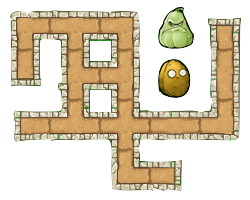
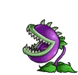

How to change the maze’s visuals¶
Files you will need¶
First, you will need all those files, in the exact specified format.
A background representing an 8x8 board, in png format, for example the following :

A file representing all possible intersections of the path and, if wanted, two “passive” entities to populate the map in png.
A sprite for the avatar in png, with the following format : 21 frames of equal size and equally spaced, with the character in the center of each one. The frames need to be ordered this way :
- The first (left) sprite is the character from the back. Then, we have a transition where it turns on it’s right in three steps
- The next frame, the 5th one, is the character on it’s right profile. Then, another transition with a turn to the right in three steps
- The 9th fame is then the character from the front. Again, the three next are a transition to the right.
- The 13th frame is the left profile, followed by the last transition, getting us to 16 images
- Finally, 5 images representing a walking animation (currently not used by the application, you can put any frame) to get to the 21.
A marker representing the goal of the maze idle, when the character is on another tile. As every other “interactive” part of the maze, it is usually in gif, but a png would work as well
The marker when it is reached by the character and the game is won (gif or png)

An obstacle idle, when the character is on another tile (gif or png)
The obstacle when killing the character, ending the game (gif or png)

You may also add, but do not need to :
- mp3 and ogg files with a sound to be played when the character hit an obstacle
- mp3 and ogg files with a sound to be played when the character looses the game without hitting an obstacle
- mp3 and ogg files with a sound to be played when the character wins the game
All of those files need to be put in the task folder, under : taskName/public/maze
Files to modify¶
The only file to modify is maze.js, that you will find under taskname/public. At the beginning (line 37 to 52), you will have to tweak a few parameters of the variable Maze.SKIN and to replace the names of the files with your own files, like so :
Maze.SKIN = {
sprite: task_directory_path + 'maze/avatar.png',
#Rest of the parameters
}
Will become :
Maze.SKIN = {
sprite: task_directory_path + 'maze/myAvatarName.png',
#Rest of the parameters
}
Here is a break down of all the variables and what they correspond to :
- sprite: your avatar
- tiles: the tiles to show the paths
- marker: the marker or goal of the maze when idle
- goalAnimation: the marker when the game is won
- obstacleIdle: the obstacle when idle
- obstacleAnimation: the obstacle killing the character
- obstacleScale: the scale of the obstacle regarding the maze, the higher the bigger
- background: the background for the paze (png)
- graph and look, no need to modify
- obstacleSound: both sounds file for when the character hits an obstacle or
[""]if you don’t want any - winSound: both sounds file for when the character wins de game or
[""]if you don’t want any - crashSound: both sounds file for when the character looses the game or
[""]if you don’t want any - crashType: to not modify